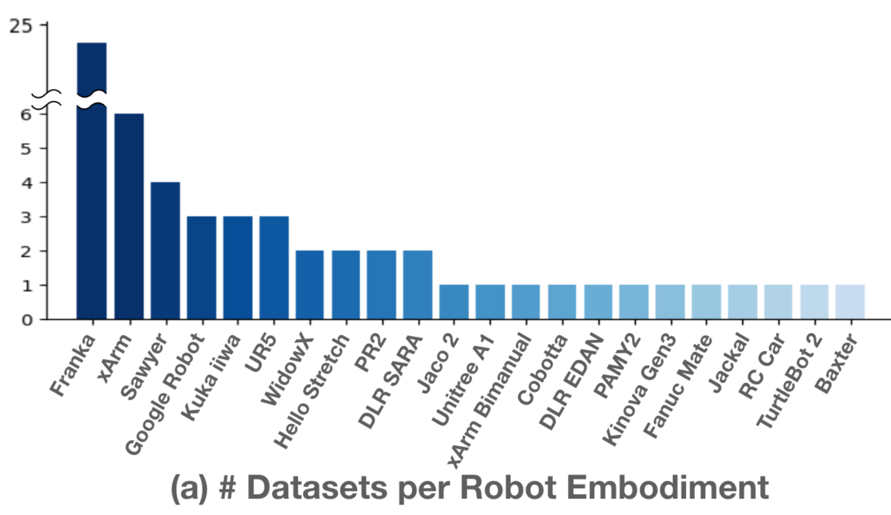
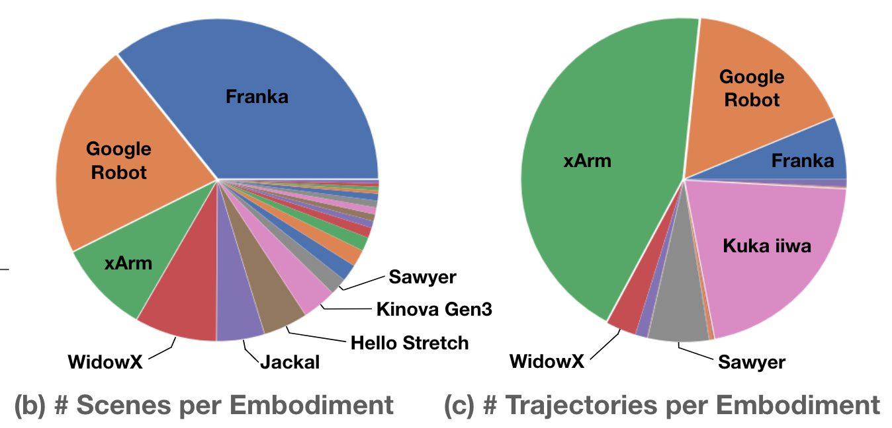
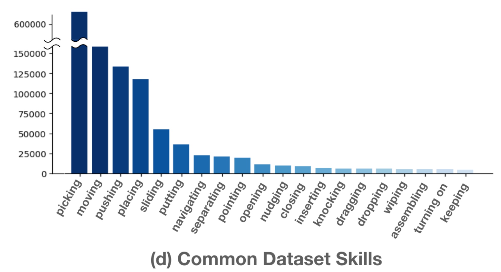
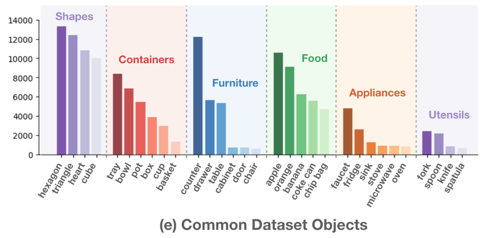
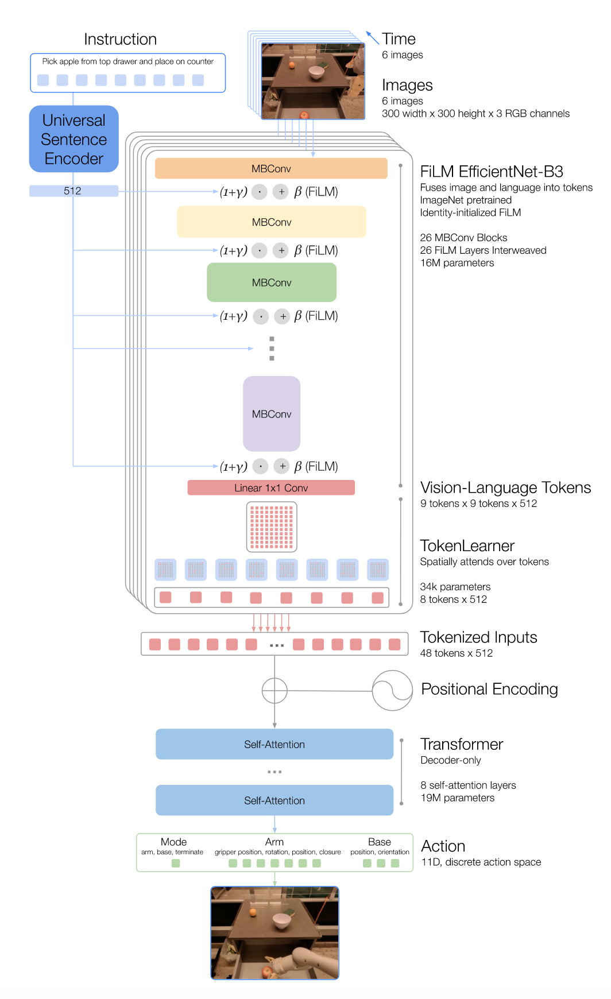
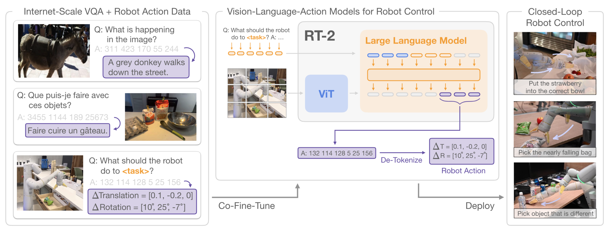
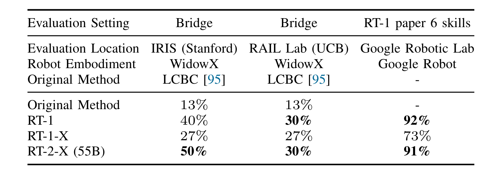
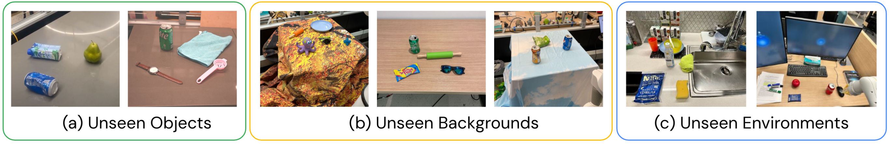
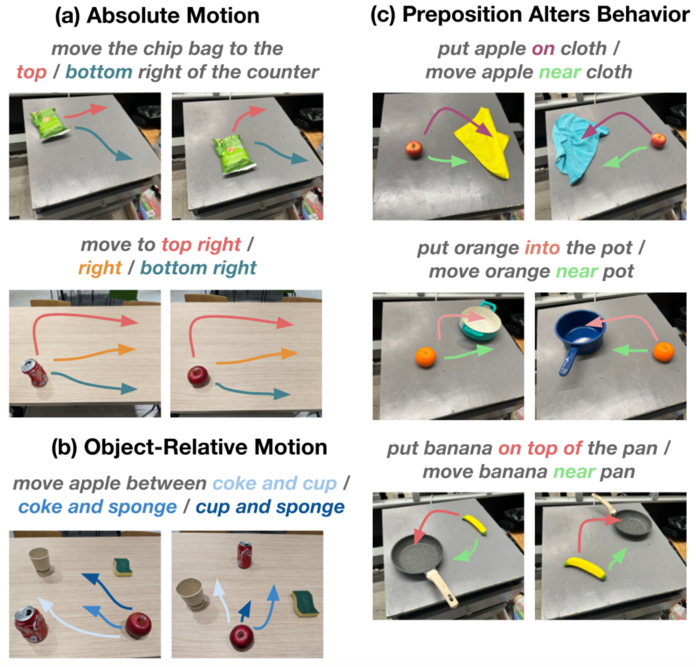

Open X-Embodiment Collaboration
Domains like NLP and CV have greatly benefited from training on diverse datasets to obtain strong performance on downstream tasks.
Research Question
Is it possible to train “generalist X-robot” policy that can be adapted efficiently to different robots, tasks, and environments by leveraging a large diverse dataset.
To this end, the authors have curated a dataset from 22 different robots containing demonstrations of 527 skills (160,266 tasks)
Key Result
High-capacity model (RT-X) trained on this dataset* exhibits positive transfer.
* trained only on a fraction of the full dataset
The gather 60 existing datasets (22 embodiments) and transform it to a consistent format.






Observation Space
RT-1: uses a history of 15 images
RT-2: single-image conditioning
(CoT reasoning wasn’t explicitly mentioned)
Action_Space
Evaluate models trained on X-embodiment dataset on in-distribution tasks.
Baselines: (1) Original Method (2) RT-1 trained only that embodiment specific dataset
Domains with large-scale datasets* 
Evaluates RT-2-X on large-scale data domains
Unseen objects, backgrounds and environments
280 evaluation tasks primarily evaluating pick-and-place skills.

| Robot | Model | Dataset | Generalization Evaluation |
|---|---|---|---|
| Google Robot | RT-2 (55B) | RT-2 | 62% |
| Google Robot | RT-2-X (55B) | Open-X* | 61% |
Generalization along these factors is primarily attributed to the VLM backbone.
Emergent Skills Evaluation
Test on skills present in Bridge-v2 dataset (WidowX) but not present in RT-2 dataset (Google Robot)

| Model | Dataset | Emergent Skill Evaluation |
|---|---|---|
| RT-2 (55B) | RT-2 | 27.3% |
| RT-2-X (55B) | Open-X* | 75.8% |
| RT-2-X (55B) | Open-X* \ {Bridge-2} | 42.8% |
| #Params | History | Initial Checkpoint | Co-Trained w/ Web | Emergent Skill Eval | Generalization Eval |
|---|---|---|---|---|---|
| 55B | none | Web-pretrained | Yes | 75.8% | 61% |
| 5B | none | Web-pretrained | Yes | 14.5% | 30% |
| 5B | 2 | Web-pretrained | Yes | 44.4% | 52% |
| 5B | 2 | Web-pretrained | No | 48.7% | 47% |
| 5B | 2 | From scratch | No | 0% | 1% |
Study Limitations:
RT-2 Limitations:
What is a good unified action representation across modalities?
Data streams across robots are often captured at different frequencies. This should perhaps be factored in the architecture via position embedding?
How much in-domain data is needed for fine-tuning? This also informs how the action normalization & de-normalization happen.